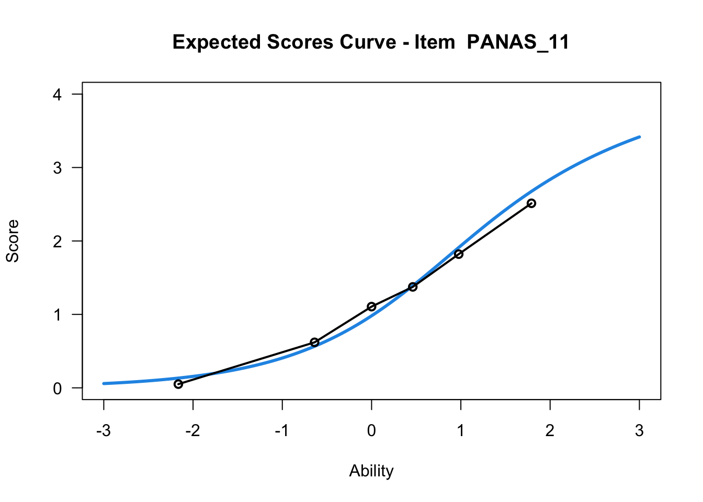
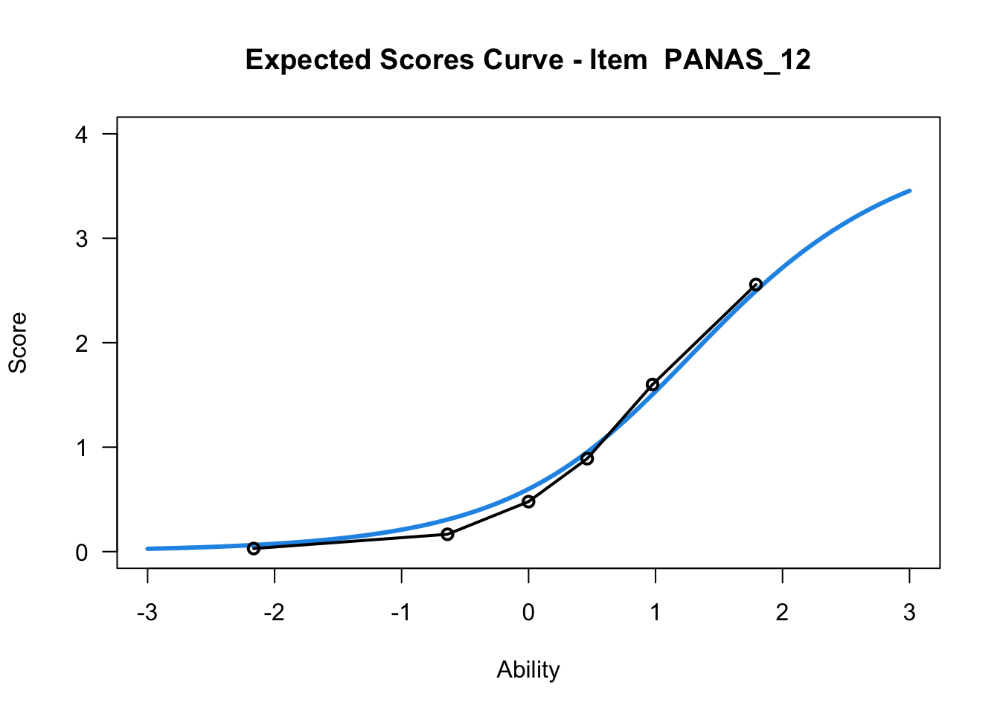
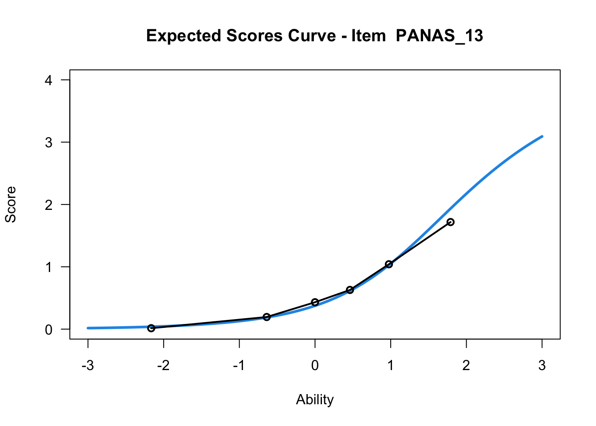
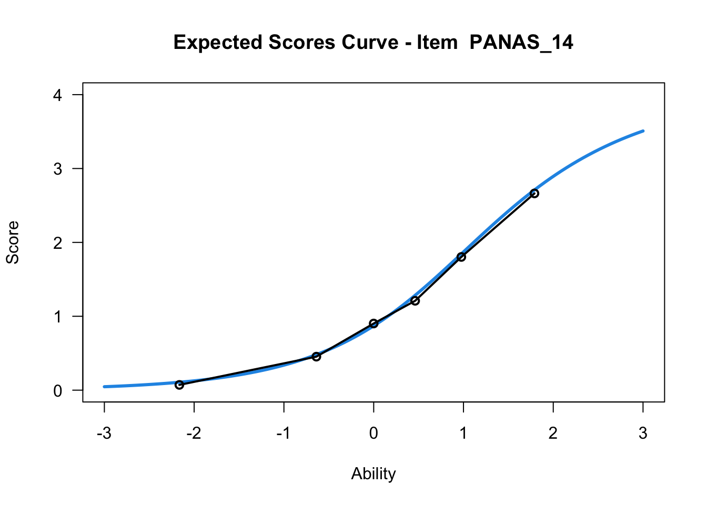
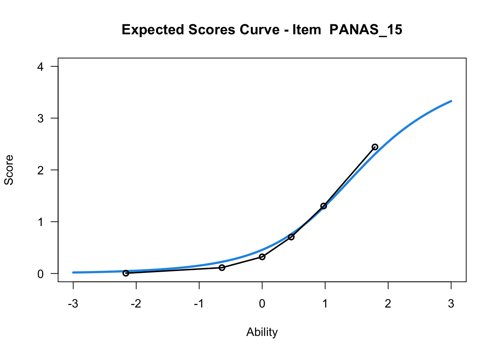
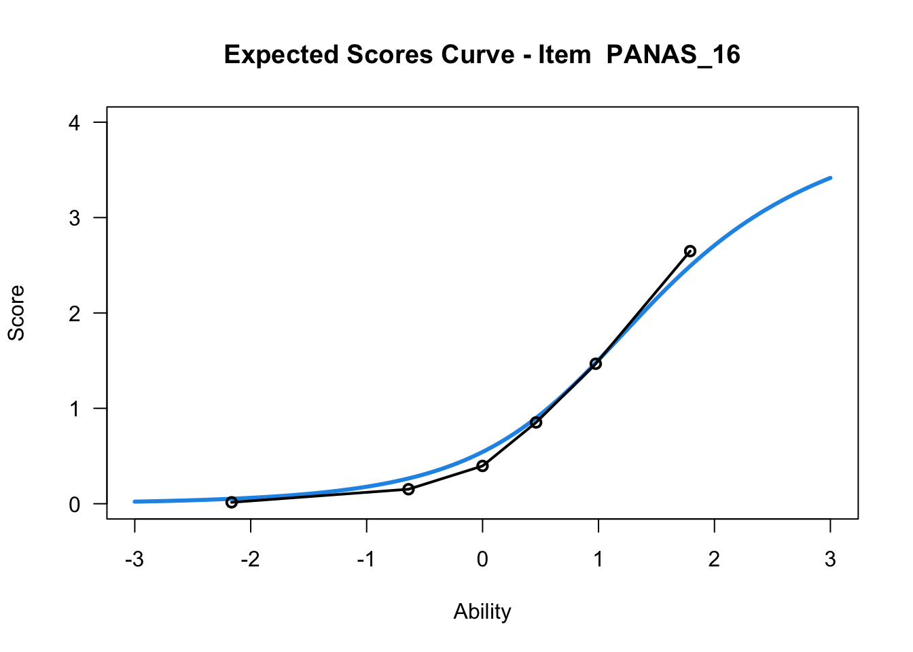
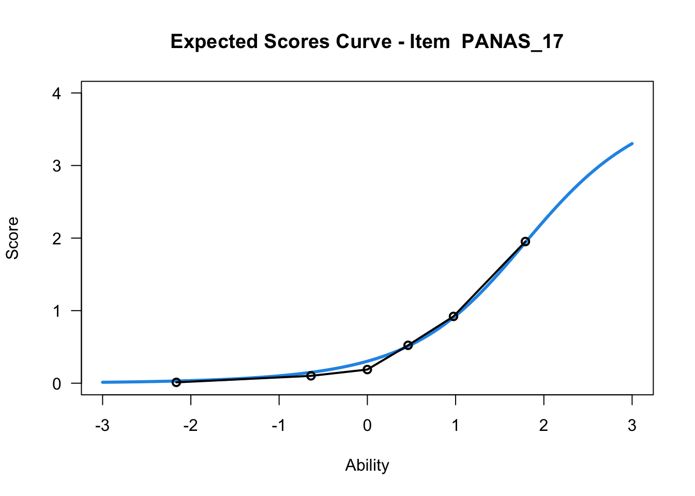
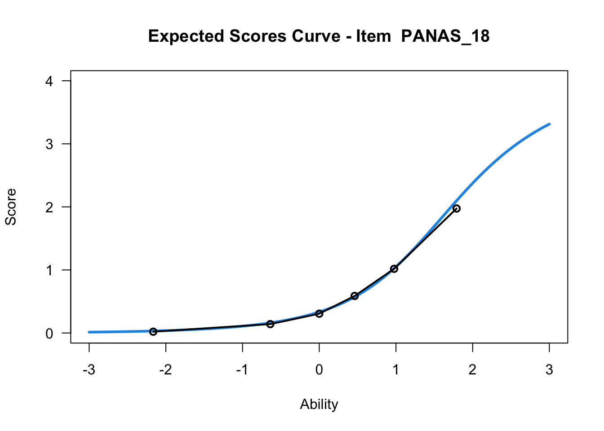
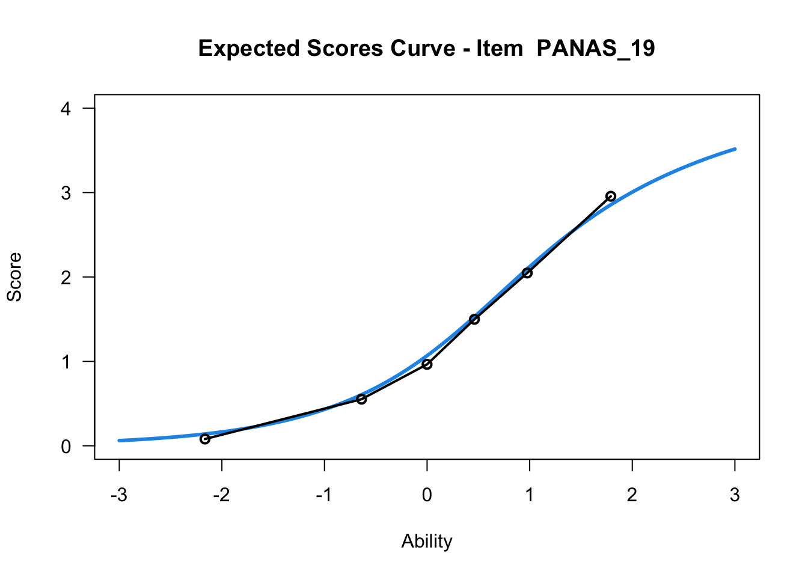
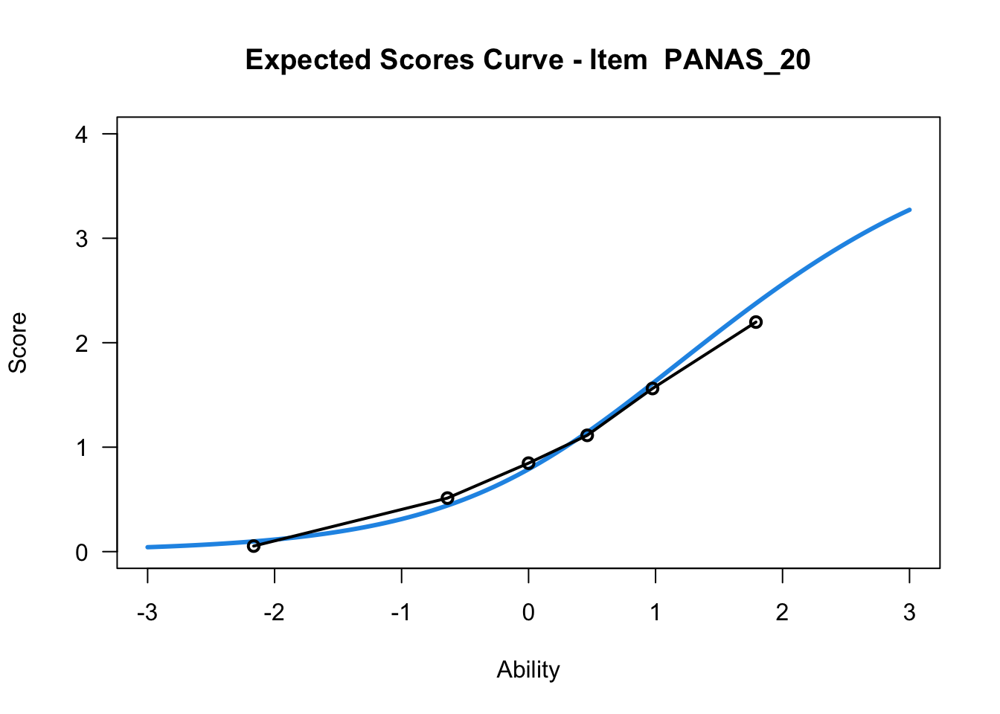

df.all<-read_csv("https://osf.io/download/6fbr5/")# if you have issues with the link, please try downloading manually using the same URL as above# and read the file from your local drive.# subset items and demographic variablesdf<-df.all%>%select(starts_with("PANASD2_1"),starts_with("PANASD2_20"),age,Sex,Group)%>%select(!PANASD2_10_Active)%>%select(!PANASD2_1_Attentive)
With only item data remaining in the dataframe, we can easily rename the items in the item dataframe. These names match the itemlabels variable itemnr.
This provides us with an overall picture of the data distribution. As a bonus, any oddities/mistakes in recoding the item data from categories to numbers will be clearly visible.
Most R packages for Rasch analysis require the lowest response category to be zero, which makes it necessary for us to recode our data, from using the range of 1-5 to 0-4.
# always check that your recoding worked as intended.RIallresp(df)
Response category
Number of responses
Percent
0
9430
50.9
1
4136
22.3
2
2676
14.5
3
1722
9.3
4
546
2.9
2.1.1 Guttman structure
While not really necessary, it could be interesting to see whether the response patterns follow a Guttman-like structure. Items and persons are sorted based on lower -> higher responses, and we should see the color move from yellow in the lower left corner to blue in the upper right corner.
Iteration in WLE/MLE estimation 1 | Maximal change 2.949
Iteration in WLE/MLE estimation 2 | Maximal change 2.0344
Iteration in WLE/MLE estimation 3 | Maximal change 0.7294
Iteration in WLE/MLE estimation 4 | Maximal change 0.1271
Iteration in WLE/MLE estimation 5 | Maximal change 0.0034
Iteration in WLE/MLE estimation 6 | Maximal change 1e-04
Iteration in WLE/MLE estimation 7 | Maximal change 0
----
WLE Reliability= 0.761










....................................................
Plots exported in png format into folder:
/Users/magnuspjo/Library/CloudStorage/OneDrive-RISE/Dokument/R/PMhealth2023/Plots
3 Rasch analysis 1
The eRm package and Conditional Maximum Likelihood (CML) estimation will be used primarily, with the Partial Credit Model since this is polytomous data.
We will begin by looking at unidimensionality, response categories, and targeting in parallel below. For unidimensionality, we are mostly interested in item fit and residual correlations, as well as PCA of residuals and loadings on the first residual contrast. At the same time, disordered response categories can influence item fit, and targeting can be useful if it is necessary to remove items due to residual correlations.
When unidimensionality and response categories are found to work adequately, we will move on to invariance testing. And when/if invariance looks good, we can investigate reliability/measurement uncertainties.
In the tabset-panel below, each tab will have some explanatory text.
Item 18 has issues with the second lowest category being disordered.
Item 15 shows low item fit.
Two item-pairs show residual correlations above the cutoff value:
15 and 16 (scared and afraid)
17 and 18 (ashamed and guilty)
Since item 15 also had low item fit, we will remove it. In the second pair, item 18 will be removed since it also had problems with disordered response categories.
As seen in the code above, I chose to create a copy of the dataframe with the removed items omitted. This can be useful if, at a later stage in the analysis, I want to be able to quickly “go back” and reinstate an item.
4 Rasch analysis 2
With items 15 and 18 removed.
copy/paste the code from above to run the same analysis without items 15 and 18.
4.1 NOTE
Remember to change df -> df2 since we saved the modified dataset to the new dataframe labeled df2.
Johansson, Magnus, Marit Preuter, Simon Karlsson, Marie-Louise Möllerberg, Hanna Svensson, and Jeanette Melin. 2023. “Valid and Reliable? Basic and Expanded Recommendations for Psychometric Reporting and Quality Assessment.”https://doi.org/10.31219/osf.io/3htzc.
---title: "RISEkbmRasch vignette"subtitle: "An R package for Rasch analysis"title-block-banner: "#009ca6"title-block-banner-color: "#FFFFFF"author: name: 'Magnus Johansson' affiliation: 'RISE Research Institutes of Sweden' affiliation-url: 'https://www.ri.se/kbm' orcid: '0000-0003-1669-592X'date: 2023-05-26date-format: YYYY-MM-DDformat: html: theme: materia css: styles.css toc: true mainfont: 'Lato' monofont: 'Roboto Mono' code-overflow: wrap code-tools: true code-fold: true code-link: true number-sections: true fig-dpi: 96 layout-align: left page-layout: full linestretch: 1.6 license: CC BYexecute: cache: true warning: false message: falsebibliography: references.bibeditor_options: chunk_output_type: console---```{r}library(RISEkbmRasch) # devtools::install_github("pgmj/RISEkbmRasch")library(grateful)library(ggrepel)library(car)library(kableExtra)library(readxl)library(tidyverse)library(eRm)library(mirt)library(psych)library(ggplot2)library(psychotree)library(matrixStats)library(reshape)library(knitr)library(cowplot)library(formattable) library(glue)library(foreach)```## Importing data```{r}df.all <-read_csv("https://osf.io/download/6fbr5/")# if you have issues with the link, please try downloading manually using the same URL as above# and read the file from your local drive.# subset items and demographic variablesdf <- df.all %>%select(starts_with("PANASD2_1"),starts_with("PANASD2_20"), age,Sex,Group) %>%select(!PANASD2_10_Active) %>%select(!PANASD2_1_Attentive)``````{r}itemlabels <- df %>%select(starts_with("PAN")) %>%names() %>%as_tibble() %>%separate(value, c(NA, "item"), sep ="_[0-9][0-9]_") %>%mutate(itemnr =paste0("PANAS_",c(11:20)), .before ="item")```The `itemlabels` dataframe looks like this.```{r}itemlabels```### Demographics```{r}df <- df %>%filter(Sex %in%c("Female","Male"))```Let's make the variable a factor (instead of class "character") and put in in a vector separate from the item dataframe.```{r}dif.sex <-factor(df$Sex)```And remove our DIF demographic variable from the item dataset.```{r}df$Sex <-NULL```We can now make use of a very simple function included in this package!```{r}RIdemographics(dif.sex, "Sex")``````{r}dif.age <- df$agedf$age <-NULL```There is also a grouping variable which needs to be converted to a factor.```{r}dif.group <-factor(df$Group)df$Group <-NULLRIdemographics(dif.group, "Group")```With only item data remaining in the dataframe, we can easily rename the items in the item dataframe. These names match the `itemlabels` variable `itemnr`.```{r}names(df) <- itemlabels$itemnr```Now we are all set for the psychometric analysis!## Descriptives### Overall responsesThis provides us with an overall picture of the data distribution. As a bonus, any oddities/mistakes in recoding the item data from categories to numbers will be clearly visible.```{r}RIallresp(df)```Most R packages for Rasch analysis require the lowest response category to be zero, which makes it necessary for us to recode our data, from using the range of 1-5 to 0-4.```{r}df <- df %>%mutate(across(everything(), ~ car::recode(.x, "1=0;2=1;3=2;4=3;5=4", as.factor = F)))``````{r}# always check that your recoding worked as intended.RIallresp(df)```#### Guttman structureWhile not really necessary, it could be interesting to see whether the response patterns follow a Guttman-like structure. Items and persons are sorted based on lower -> higher responses, and we should see the color move from yellow in the lower left corner to blue in the upper right corner.```{r}RIheatmap(df)```### Item level descriptives```{r}#| column: marginRIlistItemsMargin(df, fontsize =13)```::: panel-tabset#### Tile plot```{r}RItileplot(df)```#### Stacked bars```{r}RIbarstack(df)```#### Barplots```{r}#| layout-ncol: 2RIbarplot(df)```#### Expected Value Curves```{r}#| layout-ncol: 2library(TAM)tam1 <-tam(as.matrix(df), irtmodel ="PCM", verbose =FALSE)plot(tam1)```:::## Rasch analysis 1The eRm package and Conditional Maximum Likelihood (CML) estimation will be used primarily, with the Partial Credit Model since this is polytomous data.This is also where the [five basic psychometric aspects](https://doi.org/10.31219/osf.io/3htzc) are good to recall [@johansson].- Unidimensionality- Response categories- Invariance- Targeting- Measurement uncertainties (reliability)We will begin by looking at unidimensionality, response categories, and targeting in parallel below. For unidimensionality, we are mostly interested in item fit and residual correlations, as well as PCA of residuals and loadings on the first residual contrast. At the same time, disordered response categories can influence item fit, and targeting can be useful if it is necessary to remove items due to residual correlations.When unidimensionality and response categories are found to work adequately, we will move on to invariance testing. And when/if invariance looks good, we can investigate reliability/measurement uncertainties.In the tabset-panel below, each tab will have some explanatory text.```{r}#| column: margin#| echo: falseRIlistItemsMargin(df, fontsize =13)```::: panel-tabset### Item fit```{r}RIitemfitPCM2(df, samplesize =300, nsamples =32, cpu =8)```### PCA```{r}RIpcmPCA(df)```### Residual correlations```{r}RIresidcorr(df, cutoff =0.2)```### 1st contrast loadings```{r}RIloadLoc(df)```### Analysis of response categories```{r}#| layout-ncol: 2RIitemCats(df, xlims =c(-5,5))```### Targeting```{r}#| fig-height: 6RItargeting(df, xlim =c(-5,4))```### Item hierarchy```{r}#| fig-height: 5RIitemHierarchy(df)```:::Item 18 has issues with the second lowest category being disordered.Item 15 shows low item fit.Two item-pairs show residual correlations above the cutoff value:- 15 and 16 (scared and afraid)- 17 and 18 (ashamed and guilty)Since item 15 also had low item fit, we will remove it. In the second pair, item 18 will be removed since it also had problems with disordered response categories.```{r}removed.items <-c("PANAS_15","PANAS_18")df2 <- df %>%select(!any_of(removed.items))```As seen in the code above, I chose to create a copy of the dataframe with the removed items omitted. This can be useful if, at a later stage in the analysis, I want to be able to quickly "go back" and reinstate an item.## Rasch analysis 2With items 15 and 18 removed.**copy/paste the code from above to run the same analysis without items 15 and 18.**### NOTERemember to change `df` -> `df2` since we saved the modified dataset to the new dataframe labeled `df2`.## Moving to the online vignetteto check out other functions.<https://pgmj.github.io/raschrvignette/RaschRvign.html#dif---differential-item-functioning>
![]()